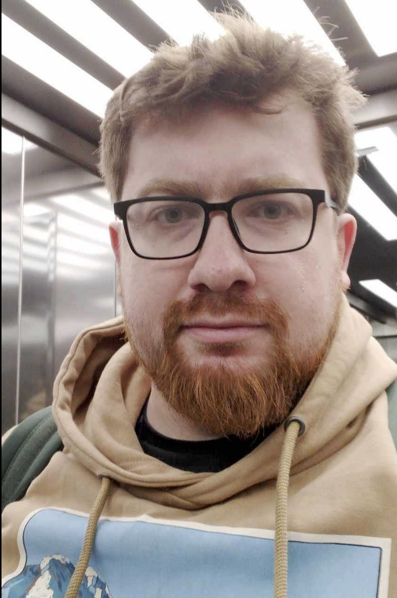

Home
Personal Webpage

Hello everybody, I am
Piotr Zdybel, PhD
Assistant Professor @ Department of Biosystems and Soft Matter,
Institute of Fundamental Technological Research,
Polish Academy of Sciences
Institute of Fundamental Technological Research,
Polish Academy of Sciences
- 17th January, 1992
- Married to Katarzyna
- (+48) 22 826 12 81 ext.: 446
- live:p.zdybel
- pzdybel@ippt.pan.pl
- Institute of Fundamental Technological Research,
Polish Academy of Sciences,
Pawińskiego St. 5B, 02-106 Warsaw, Poland
room: 327